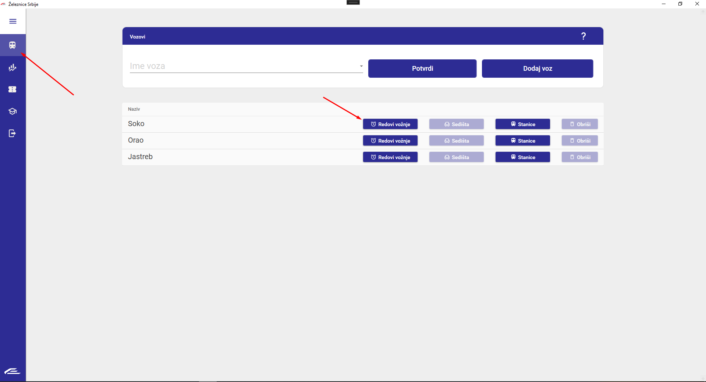
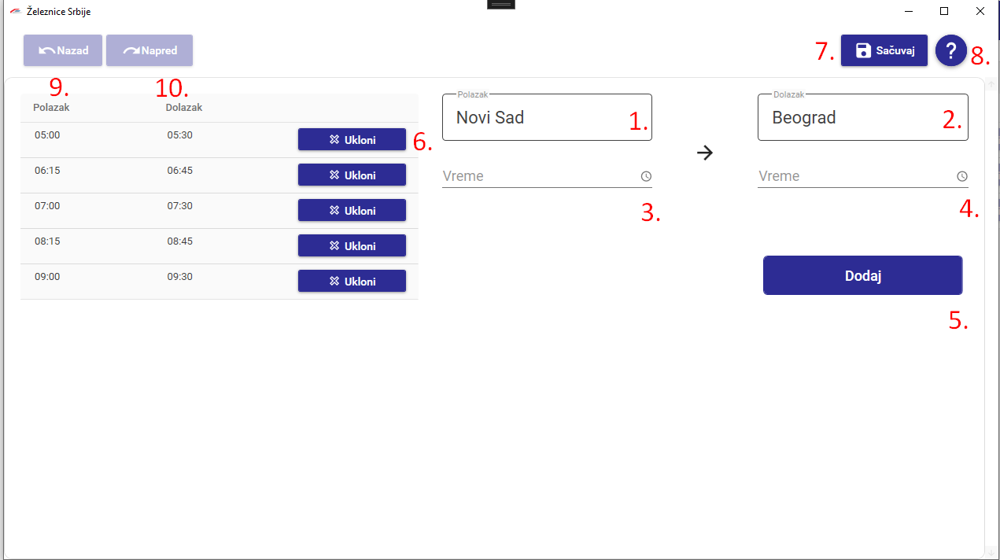

Upravljanje redovima vožnji
U nastavku možete videti kako se vrši dodavanje i brisanje redova vožnji.
Prvo, morate navigirati do ekrana za uređivanje vozova. Nakon toga, pritisnite dugme 'Redovi vožnje' kako biste
došli do ekrana za uređivanje redova vožnji.

Nakon toga, pojaviće Vam se ekran za uređivanje redova vožnji.

- Mesto polaska
- Mesto dolaska
- Vreme polaska
- Vreme dolaska
- Dugme za dodavanje reda
- Tabela redova
- Dugme sačuvaj
- Dugme za pomoć
- Dugme za pomoć
- Dugme za korak unazad
- Dugme za korak unapred
Željeno vreme polaska unosi se u polje pod brojem 3. Nakon toga, unosi se vreme stizanja na krajnje odredište u polje broj 4.
Vremena pristizanja na stanice između se automatski izračunava i ne unose se. Ukoliko nakon pritiska na dugme 'Dodaj' zadato vreme
bude u konfliktu sa ostalim vremenima, dobija se poruka o grešci koja je napravljena kao i o vremenu sa kojim je zadato vreme u konfliktu.
Ukoliko želite da se vratite korak unazad, to možete izvršiti klikom na dugme 'Unazad' dok suprotnu akciju možete izvršiti klikom
na dugme 'Unapred'.
Da biste sačuvali trenutnu konfiguraciju u memoriju, kliknite dugme 'Sačuvaj'
Lista prečica
- Prelazak na naredno polje: Tab
- Korak unazad: Ctrl + Z
- Korak unapred: Ctrl + Y
- Sačuvaj: Ctrl + S